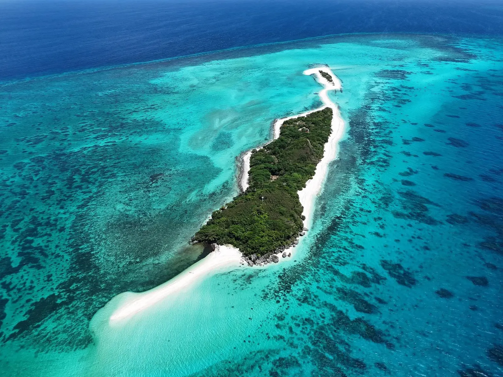
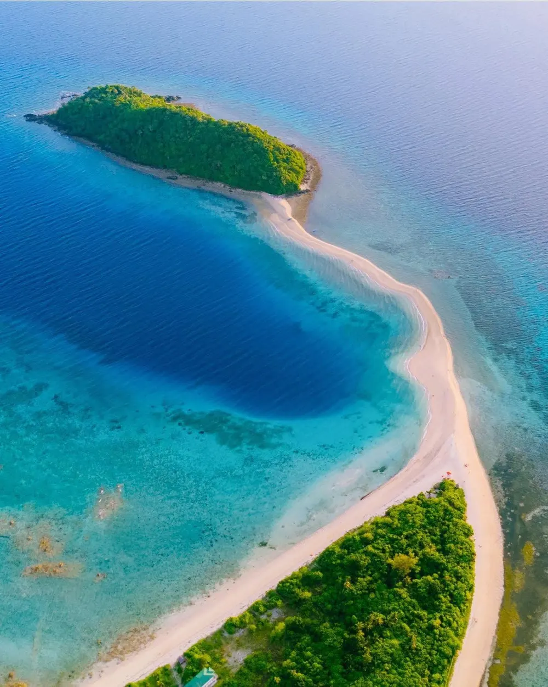
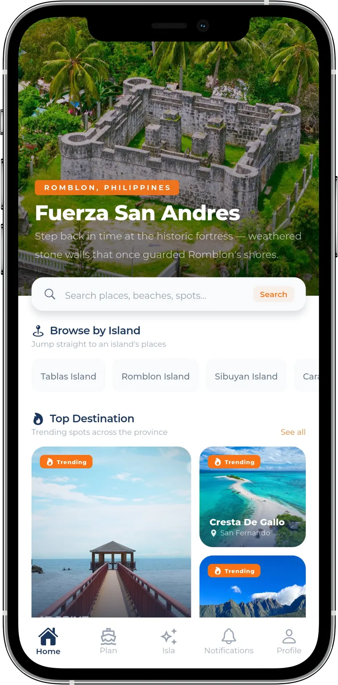
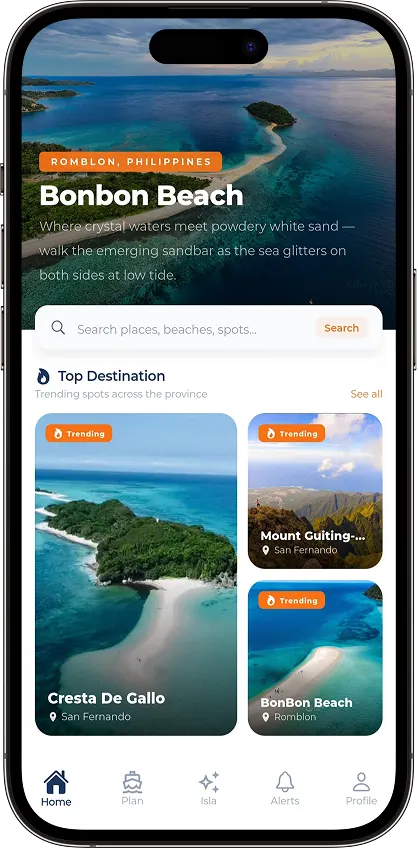
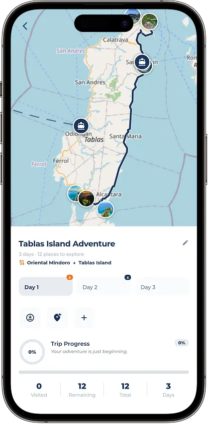
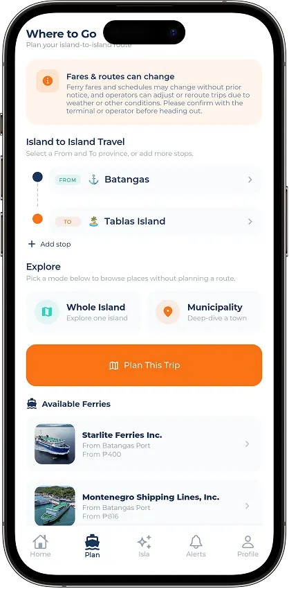
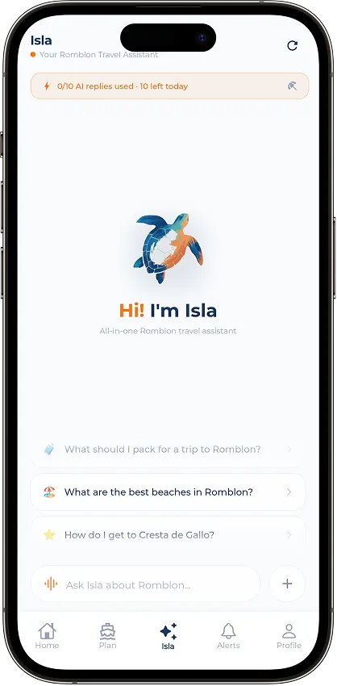

Sibuyan12.40° N · 122.56° E
Sibuyan Island
The wild one. Mount Guiting-Guiting, river-boulder valleys, and Cresta de Gallo just offshore of San Fernando.
AdventureExploreDiscover
Island-hop Romblon, ferry by ferry. Pick your islands and Adventure builds the itinerary around the ferries, terminals and places along the way.
Romblon is twenty islands scattered across the Sibuyan Sea. Getting between them is the adventure — and the hard part. So we plan your trip around the ferries, not despite them.
Built around real ferry routes, terminals and schedules — not a generic map with a Romblon tab.
Generate your itinerary online, then open it anywhere — even when the signal drops between islands.
Made in Romblon, with input from local organizations and photographers across the province.
From a knife-edge summit to sandbars that only appear at low tide. Tap any place to open it on the map.

Mount Guiting-Guiting rises straight out of Sibuyan Island — a serrated ridge of granite above old-growth forest. It's one of the hardest climbs in the country, and the view from the top makes every step worth it.
Discover experience (opens Google Maps in a new tab)“The hardest climb I've done — and the best sunrise.”
Maya R. · Traveler review
Each of Romblon's main islands has its own character — and its own ferry connections. Adventure knows which is which.

The wild one. Mount Guiting-Guiting, river-boulder valleys, and Cresta de Gallo just offshore of San Fernando.

The marble capital. Fuerza San Andres, Bon Bon Beach and the sandbar you can walk at low tide.
The largest island — and where most trips begin, through the ports of Odiongan and San Agustin.
Three steps, ferries already accounted for. Then everything you need on the water and on land.

Dangay Port → Odiongan Port Works offline ✓Pick starting and ending points — one island or several.
Places, terminals and ferry connections, arranged day by day.
Check off places, add photos, and finish with your own journal.
Pick your islands and get an itinerary built around real ferry routes, terminals and places.
Browse available ferries, compare schedules, and find the best connection.
Ask Isla about any municipality, fiesta date, or what to do anywhere in Romblon.
Generate your itinerary while online, then open it later — even with no signal.
Mark every stop as done, upload your memories, and create your own journal of the trip.
Every place you mark drops a pin on your personal map.




Small on the map, big on the water. This is what Adventure is built to navigate.
Built for its ferries, its terminals, its islands.
Independent since day oneTablas, Romblon
Adventure isn't a travel-tech startup with a Romblon feature. It started as a personal passion for the province — built specifically for its ferries, terminals and islands.
Designed and developed independently by Bryan Ronnie Briones in Tablas, with input from local organizations and photographers who know these islands best.
Designed and developed from the ground up.
Built around this province specifically.
Developed with local input.
Whether you want early access, have a spot to suggest, represent a local organization, or you're covering Romblon tourism — this reaches Bryan directly.
Ready to go beyond the ordinary? Get the Android beta by email, plus route tips, ferry updates and hidden spots in Romblon.